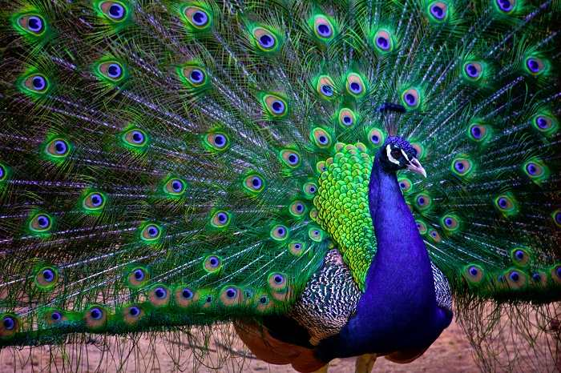

National Identity of India
National Flag:

The National Flag is a horizontal tricolour of deep saffron (kesaria) at the top, white in the middle and dark green at the bottom in equal proportion. The ratio of width of the flag to its length is two to three. In the centre of the white band is a navy-blue wheel which represents the chakra.
The top saffron colour, indicates the strength and courage of the country. The white middle band indicates peace and truth with Dharma Chakra. The green shows the fertility, growth and auspiciousness of the land.
Its design is that of the wheel which appears on the abacus of the Sarnath Lion Capital of Ashoka. Its diameter approximates to the width of the white band and it has 24 spokes. The design of the National Flag was adopted by the Constituent Assembly of India on 22 July 1947.
It is really amazing to see the various changes that our National Flag went through since its first inception. It was discovered or recognised during our national struggle for freedom. The evolution of the Indian National Flag sailed through many vicissitudes to arrive at what it is today.
National Bird:

The Indian peacock, Pavo cristatus, the national bird of India, is a colourful, swan-sized bird, with a fan-shaped crest of feathers, a white patch under the eye and a long, slender neck. The male of the species is more colourful than the female, with a glistening blue breast and neck and a spectacular bronze-green tail of around 200 elongated feathers. The female is brownish, slightly smaller than the male and lacks the tail. The elaborate courtship dance of the male, fanning out the tail and preening its feathers is a gorgeous sight.
National Flower:

Lotus (Nelumbo Nucifera Gaertn) is the National Flower of India. It is a sacred flower and occupies a unique position in the art and mythology of ancient India and has been an auspicious symbol of Indian culture since time immemorial.
India is rich in flora. Currently available data place India in the tenth position in the world and fourth in Asia in plant diversity. From about 70 per cent geographical area surveyed so far, 47,000 species of plants have been described by the Botanical Survey of India (BSI).
National Animal:
The magnificent tiger, Panthera tigris is a striped animal. It has a thick yellow coat of fur with dark stripes. The combination of grace, strength, agility and enormous power has earned the tiger its pride of place as the national animal of India. Out of eight races of the species known, the Indian race, the Royal Bengal Tiger, is found throughout the country except in the north-western region and also in the neighbouring countries, Nepal, Bhutan and Bangladesh. To check the dwindling population of tigers in India, 'Project Tiger' was launched in April 1973. So far, 27 tiger reserves have been established in the country under this project, covering an area of 37,761 sq km.
National Tree:
Indian fig tree, Ficus bengalensis, whose branches root themselves like new trees over a large area. The roots then give rise to more trunks and branches. Because of this characteristic and its longevity, this tree is considered immortal and is an integral part of the myths and legends of India. Even today, the banyan tree is the focal point of village life and the village council meets under the shade of this tree.
State Emblem:

The state emblem is an adaptation from the Sarnath Lion Capital of Ashoka. In the original, there are four lions, standing back to back, mounted on an abacus with a frieze carrying sculptures in high relief of an elephant, a galloping horse, a bull and a lion separated by intervening wheels over a bell-shaped lotus. Carved out of a single block of polished sandstone, the Capital is crowned by the Wheel of the Law (Dharma Chakra)
In the state emblem, adopted by the Government of India on 26 January 1950, only three lions are visible, the fourth being hidden from view. The wheel appears in relief in the centre of the abacus with a bull on right and a horse on left and the outlines of other wheels on extreme right and left. The bell-shaped lotus has been omitted. The words Satyameva Jayate from Mundaka Upanishad, meaning 'Truth Alone Triumphs', are inscribed below the abacus in Devanagari script.
Currency Symbol:
The symbol of Indian Rupee typifies India's international identity for money transactions and economic strength. The Indian Rupee sign is an allegory of Indian ethos. The symbol is an amalgam of Devanagari "Ra" and the Roman Capital "R" with two parallel horizontal stripes running at the top representing the national flag and also the "equal to" sign. The Indian Rupee sign was adopted by the Government of India on 15th July, 2010.
The symbol, conceptualised and designed by Udaya Kumar, a post graduate in Design from Indian Institute of Technology Bombay, has been chosen from thousands of concept entries received by the Ministry of Finance through an open competition among resident Indian nationals. The process of establishing and implementing this new identity is underway through various digital technology and computer applications.